Starting from a simple cube, I ended up building a layered point-and-click puzzle box powered entirely by CSS: state management, animations, and even puzzle progression logic.
In this article, I’ll walk through the key techniques that make this work:
building a 3D cube
reading input values in CSS
and sequencing game logic without JavaScript
If you want to see the full code and/or go straight to the result you can view the game at https://codepen.io/jvp/full/RNPbPNw. I will not explain every line of code in this article but instead will pick the parts that are worth explaining how the entire thing works and behaves.
Disclaimer
Currently, this CSS-only game only works in Chrome because it uses style container queries which are not yet supported in other browsers.
If you open the game in another browser, you will see a dialog that will provide a link to an older version of the game where range sliders have an oninput change listener to set the input's value to a data-value property with JavaScript.
Setting up a cube in CSS
To create a CSS cube we need to set our HTML with a container element and 6 faces of the cube:
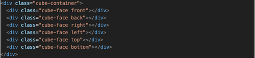
Then we add some CSS, first for the container:
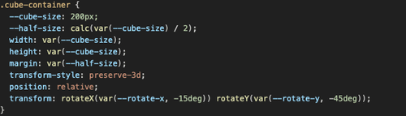
Transform-style: preserve-3d is necessary to make the 3D perspective work.
As for transform property itself, a rotate3d value exists but I found that to be quite confusing. Instead, we are using rotateX to rotate the cube on the vertical axis (yes, this is counterintuitive) and rotateY for the horizontal axis.
Right now the --rotate-x and --rotate-y vars have default values of -15deg and -45deg, but we’ll properly set these vars later.
Next is the CSS for the faces:
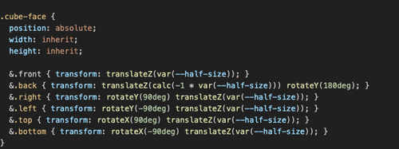
With this CSS applied, the cube will look something like this:
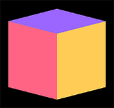
And this is where code for CSS cubes get a bit more counterintuitive, at least to my opinion. TranslateZ will move the element along the Z axis, or in other words: depth. Each face starts from the “center” of the cube.
So, for the front face we need move it forwards on the Z axis, half a cube size. For the back face, we need to move it backwards using translateZ with a negative half-size value. But after it has been moved back, we will be looking at the backside of the element. We flip it on its horizontal axis by then applying rotateY(180deg) so that we can look at the front-side of this face. For the right and left sides, we define rotateY first to let the face turn to the correct side and then apply the depth with translateZ to move it outwards. The same approach Is used for the top and bottom sides.
As you can see when comparing the back and the right/left style definitions, determining the order of your transformations has an impact on how the 3d aspect is applied and it can become hard to visualize the outcome of your styling beforehand. The best approach is to just try out stuff in your browser’s devtools, so you get instant feedback of your changes.
At this point, we have made a 3D cube out of CSS and HTML that still has a static rotation value. In the next step we will apply controls for our game so that we can rotate and zoom our cube using sliders.
Adding range sliders as game controls — and reading their values in CSS.
In this game there are multiple range sliders that control the game in different ways. For example, for zoom and for rotating the cube horizontally/vertically. But there are also range sliders for individual puzzles. Usually, you can’t read the values of range sliders in CSS, you’d need JS for that. But by applying a combination of cool CSS features we can actually use the values of the sliders in CSS.
In a nutshell: we will leverage view-timeline on range sliders to keep track of the range slider thumb’s position, then update a CSS var using a keyframe animation based on that position, then can use that CSS var in/on other elements.
We’ll look at a range slider which is the easiest to explain so that we can understand how the technique works. The zoom slider allows us to zoom in/out a bit on the cube:
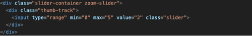
The HTML part is straightforward: a range slider with a min, max and value attribute. Its parent is a div with class “thumb-track” which we’ll get into later.
The CSS part contains a lot more stuff to go over, so we’ll dissect that step by step:
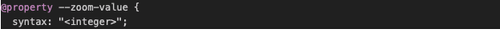
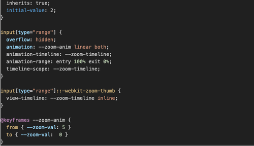
--zoom-value registration using @property.
By using @property to register the CSS var as an integer, we tell the browser how to interpolate its value.
Without this, the browser will handle the var as a string, making it impossible to use the var’s value in animations.
view-timeline: --zoom-timeline
Defined on the webkit-zoom-thumb pseudo selector, turns the thumb’s position within a scroll container into a named progress timeline.
As we move the thumb to the right using our mouse, the thumb “scrolls” and we can track its progress as it goes from 0% to 100%.
inline means that we work on the x/horizontal axis. block would mean that we would work on a y/vertical axis.
overflow: hidden
Will make sure that the “viewport” of the scroll container is bound to the input’s size
animation-timeline: --zoom-timeline
Means that the animation is driven by the timeline/scroll position, instead of regular keyframe animations that are based on seconds
timeline-scope: --zoom-timeline
By default, a view-timeline is only usable by the children of the element that defined the timeline (in our case the thumb)
By defining timeline-scope on the input, it can grab the –zoom-timeline from the thumb and apply it on itself (the input) instead
animation-fill-mode: both
Timeline-driven animations only apply their keyframe values (on --zoom-value) while the element is within the animation-range. Outside that range (at start or end), the --zoom-value property resets back to its initial value.
By applying the value both, we make sure that the property’s value holds at either the start or end values when at the edges of the range.
animation-rage: entry 100% exit 0
This feels wrong, but by default, scroll/view-timelines are designed for elements entering the viewport from the bottom and move to the top, or from right to left.
"0%" is the moment the element starts to enter the view, and "100%" is when it exits/leaves.
Since our slider thumb starts on the left (the "entry" side), we map the start of the animation to entry 100% so that moving right (towards the "exit”) progresses the value forward.
This flips the timeline logic to compensate for the earlier mentioned default direction of the view timeline.
animation: --zoom-anim
This keyframe animation follows the same logic as the “inverted” animation-rage.
At the end (from) of the timeline animation, update --zoom-val to be 5.
At the start (to) of the timeline animation, update --zoom-val to be 0.
Any timeline progress (when you drag the thumb) between end and start will be interpolated to values like 1, 2, 3 or 4.
That’s a lot of information, but it takes some time to explain it and to wrap your head around this solution. But, now that we can update our CSS var, it’s time to use it!
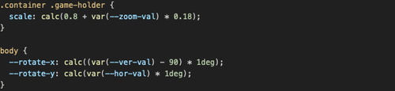
Based on the zoom slider’s value, the scaling of our cube will be somewhere between 0.8 and 1.8. On the body, we define the --rotate-y and --rotate-x CSS vars (for the horizontal and vertical sliders) based on the --ver-val and --hor-val custom properties that were created in a similar manner like --zoom-val. In the previous chapter we already used these rotate vars on the .cube-container for rotation, so now that we added the sliders, we can scale and rotate our cube in real time!
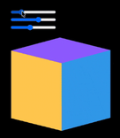
At this point, we have implemented a technique based on view-timeline to read and store the value of input range sliders without any JavaScript. This isn’t just used for rotation and zooming of the cube, it’s also used as a game mechanic in a few puzzles.
Adding visuals, a puzzle element, an inventory and a dialog
With the basics in place, we can start adding textures to our cube and incorporate puzzle elements to it. For this game I decided to build multiple layers of the cube. So, there’s an outer / 1st layer where we start and once that layer is solved, we go deeper into the cube to the 2nd layer and finally into the 3rd layer. For the aesthetics, I decided to go with a copper steampunk style. Given the fact that we’re dealing with a puzzle cube, steampunk gears would also fit perfectly. I made use of Bing’s free AI image generator and asked it to generate 6 faces of a cube in this aesthetic and named 6 different animal faces that should be on each face of the cube. The result was a beautiful image with a great steampunk aesthetic; we’re off to a great start!
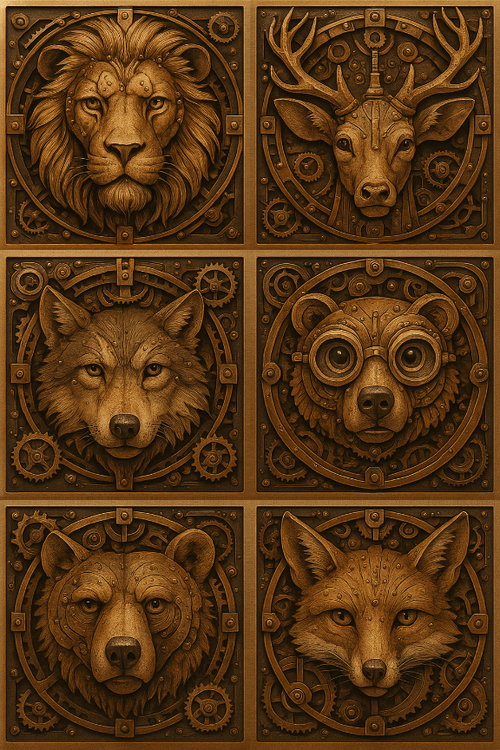
As one could expect with AI though (it’s never perfect), there were 2 bears in it, and the wolf and fox looked a bit similar. I decided to put the bear and wolf faces at the top and bottom of the cube so they were less prominent.
The bear with the goggles gave a great opportunity to put a red gemstone in one of the goggles that the player could inspect and collect. Putting the bear with the goggles on the back of the cube meant that it would only become visible once the player rotates the cube. This way the player is taught to look around the cube for clues to solve puzzles.
I mapped each face from the image to each face of the cube, gave the cube an extra layer-1 class and added a <label> inside the right face for the gem, which, based on the starting point of view (POV) for the game, was at the back of the cube.
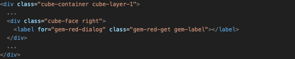
At the start of the HTML, I added a checkbox with id gem-red-dialog, to which the aforementioned label points to with it’s for attribute.
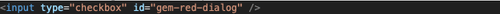
After clicking the label, the input for the dialog will become checked. Using the label + checkbox combination is one way of doing state management without JS, and it’s probably the most robust one as it will result in a clear boolean value after clicking on the label.
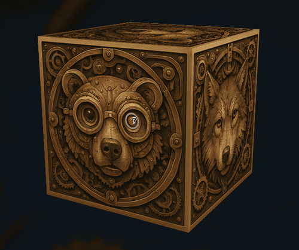
Now that the red gem is clickable, we will hook into it and do two things:
Display a dialog describing the item that was picked up.
Add some UI for an inventory so we can display the collected red gem.
The dialog element is a simple div container that’s hidden by default and has disabled pointer events.
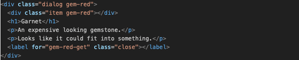
Once the checkbox is checked, it animates in:
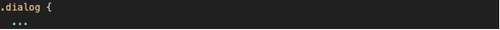
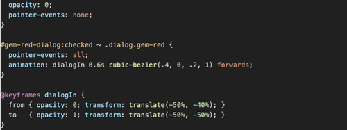
The inventory is positioned at the bottom left of the screen. Each item (which is just another label that will target another checkbox) is hidden by default and will only be shown when the checkbox for getting that item has been checked.
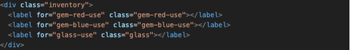
When the player picks up the gem and closes the dialog, another checkbox (#gem-red-get) gets checked which in turn will show the item in the inventory.
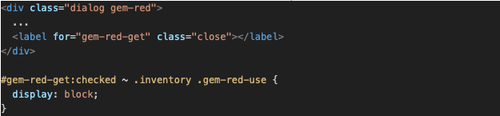
Puzzles from the cube’s 2nd layer – and container queries
As the red gem is collected the 1st layer opens up, revealing the 2nd layer of the cube.
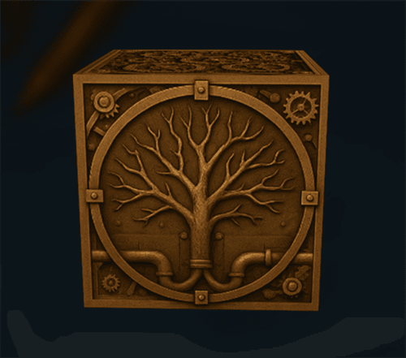
Once the 2nd layer is focused into view, we are automatically facing the first face of the second cube which has a steampunk metal tree on it. Let’s call this the front face of the 2nd layer for orientation purposes. At the base of the tree, there are two pipes running off to the left and right, hinting that the other faces are connected and could power/feed the tree somehow.
Electric box/lever puzzle
If we look at the face to the left, we see a face where the pipe goes into an electric box. This puzzle (constructed by using multiple elements/layers) also has three range sliders rotated at 90 degrees, with the numbers 1 through 10 written alongside. When the range sliders are adjusted to match this combination, the electric box opens and reveals a lever that you can pull down:
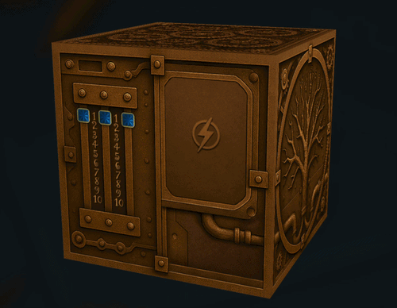
Wheel puzzle
On the back face we find a large wheel with a rotating handle attached to it, the handle is actually just another range slider. By default a range slider is never curved, but the illusion here of a curved range slider is created by rotating the range slider with its own value as you drag it. Around the edge of the wheel are various steampunk-themed icons. The goal is to find the tree icon (the same one from the front face) and align the handle with it.
Once solved, a compartment with the item Aether monocle is revealed.
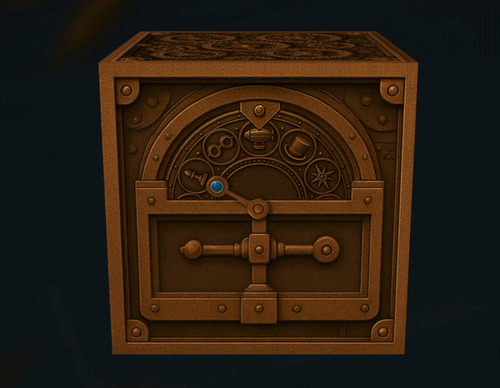
9 buttons puzzle
The right face contains a large circular glass with a 3×3 grid of nine buttons beside it. For this puzzle the player needs to press the correct buttons.
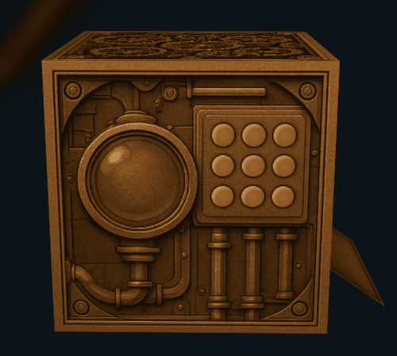
To know which buttons need to be pressed, the player should use the Aether monocle from their inventory to see the solution. Once the correct buttons are checked and the rest are left unchecked, the puzzle has been solved and the glass lights up with blue electricity.
Container queries
To read the values of these puzzles and respond to them, @container style queries are used for most of these 2nd layer’s puzzles. Why container queries? We need a way to combine and manage separate pieces of state:
checkbox values (state of HTML elements)
range slider values (CSS variables)
triggering a transition that only fires when all conditions are met.
We achieve this by using :has() selectors and @container style() queries together, leveraging the strengths of each:
The :has() selector is perfect for checking DOM states (like :checked on checkboxes). By chaining :has() and :not() selectors, we can verify the exact combination of checked and unchecked boxes for the 9-buttons puzzle. If the pattern is correct, the --checkboxes-solved variable is updated to 1.
Container style queries act as a rule engine: While :has() is great for DOM states, it cannot read CSS variables and thus cannot check the exact numeric value of a range slider. Container style queries solve this. They allow us to treat CSS variables as a state and react to them declaratively.
By combining both techniques, we can check to see whether both required puzzles are solved before we proceed.
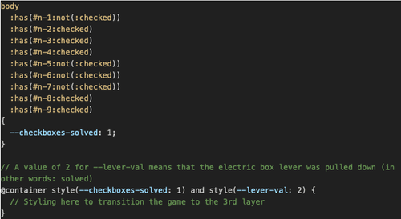
Once both the “9 buttons” and “electric box” puzzles have been solved, all controls are locked and fade out, then the cube automatically rotates back to the front face to show an animation where green leaves grow on the metallic tree.
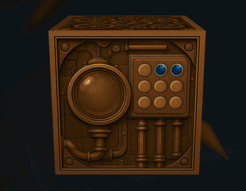
Once the leaves animation is done, the blue gem fades in on one of the branches. Clicking it opens another dialog and adds the gem to the inventory.
Closing the dialog will open up the 2nd layer’s cube and show the 3rd and final layer, the layer with the dark crystal.
At this point we have used the same range slider technique as actual game mechanics, and leveraged container style queries to check whether we have the right values for CSS vars to continue.
By now we have tackled all the advanced CSS logic. However, for our 3rd layer we have one final trick using simple HTML form elements and CSS.
The final puzzle
The 3rd layer is the core of the cube, a dark floating crystal that slowly hovers up and down. The crystal projects an entire map of stars in our room. These stars slowly fade in and out, but the player with a keen eye will notice that a star on the left side and a star on the right side blink in a different pattern. These two stars are the key to solving this final puzzle. The 2 new arrow buttons on the left and right sides of the screen are disabled by default, but both buttons contain gray slots in the middle. By placing the gems from the inventory in each button, the buttons become active, allowing the player to rotate the dark crystal.
In this section we will implement a way for the user to click the left and right buttons in a certain pattern in order to solve this last puzzle.
We will cover the following challenges:
How do we implement a click-pattern in HTML/CSS without JavaScript?
How do we know whether the player has clicked the correct or incorrect button?
How do we keep track of the number of clicks that are done for this pattern?
How do we reset the pattern if an incorrect answer was selected and the player needs to start over?
Luckily, we have a robust set of old HTML elements that allow us to do just that: a radio button group.
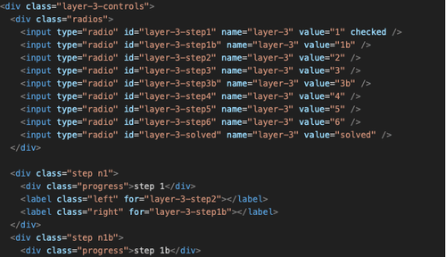
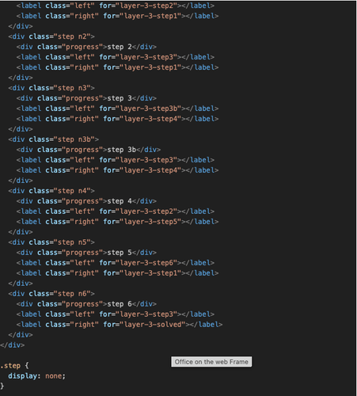
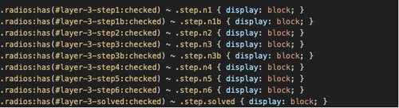
I’m not going to lie, setting this up is where my brain started to hurt. To simplify things, let’s ignore the 1b/3b steps for now. The idea is fairly straightforward:
There are 6 step containers, and we only show 1 step at a time.
Only the active step has display: block; while the others have display: none.
All steps have position: absolute and are all placed in the same position.
Each step has a left and right button that target a different radio input.
One button is the correct answer for that current step and will take you further into the pattern, the other button is the incorrect answer
By clicking the correct button (and thus checking the next radio input in the radio input group) the next step becomes visible.
Since these steps are instantly swapped with display block/none, the player does not notice that a new step with new buttons is being shown.
By clicking the incorrect button, you are either taken back to step 1, or an earlier step.
If you click the final correct button the “layer-3-solved” radio input will be checked and we finish the game.
In case you haven’t seen this puzzle in action yet and have not seen the pattern of the blinking left/right stars, the correct pattern is left, left, right, right, left, right.
This is an elegant solution to keep track of a click pattern without needing any JavaScript, and this is probably my favorite part of code for this game.
If we look at the dark crystal while we click on the left or right buttons, we can see that the crystal will rotate clockwise (left) or counterclockwise (right). At first, I did not have the 1b and 3b steps, but the downside was that the rotating of the crystal didn’t make much sense without these extra steps.
If you are on step 1 and you would click on the right button (the incorrect answer), it wouldn’t make much sense to target the same step 1 radio input to prevent progression as nothing visually would change. We need to give the player visual feedback that something happened, and the impression that clicking on the right button will rotate the crystal just like normal. At this point the player still needs to find out that there actually is a pattern that needs to be solved.
Hence why I introduced the 1b step. If you are on step 1 and click on the right button, then the crystal will rotate to the right and step 1b becomes active. Clicking on the right button while in step 1b (still the incorrect answer) will activate step 1 again and the process/pattern has successfully been reset, thus creating a perfect infinite loop if the player keeps clicking on the right button while having a visual indication that something is still happening.
The same reasoning has been used for step 3b to keep the impression that rotating continues “like normal” even when the incorrect button has been clicked.
What makes this setup even better is that an incorrect answer will never break the puzzle/sequence, it just resets you to an earlier step and there is no finite amount of tries.
This means that no matter when you start following the pattern of the blinking stars, as long as you follow their pattern, you'll eventually solve the puzzle.
Once the final radio button (#layer-3-solved) is checked, the controls disappear and the crystal starts spinning rapidly with a flickering light effect. The same six animal faces from the 1st layer appear as constellations and begin counterrotating around the crystal. After a few seconds a white radial flash scales from the center and the final “win screen” dialog is shown, congratulating the player on its keen observation skills:
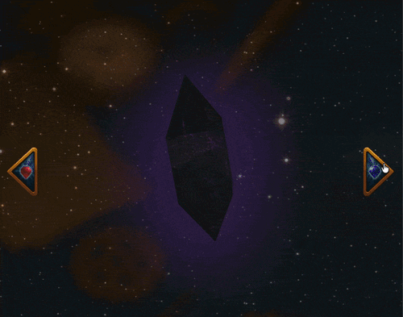
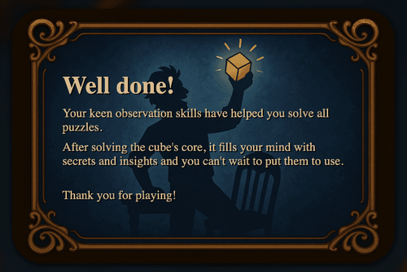
Outro
Phew, that was quite a lot to cover. As mentioned in the intro I did not/could not cover every little piece of code in this article, but you are more than welcome to check out the source at https://codepen.io/jvp/full/RNPbPNw to take a deep dive. There’s more nifty pieces of code like the growth of the leaves to take a look at.
The techniques that we discussed and the combination of them is indeed powerful, but this obviously comes with tradeoffs:
- Browser support (currently limited due to container queries - Chrome only)
- Complexity and maintainability (state is distributed across CSS selectors, which can become hard debug)
- Accessibility (interactions rely heavily on visuals and hidden inputs)
- Maintainability (adding new puzzles increases selector complexity quickly)
In a real-world application this obviously is not a recommended setup, but as an experiment this shows how far CSS can be pushed as a state system.
Individually though, these techniques themselves can be very powerful tools for styling your site.
Thank you for reading and hopefully this has been an enjoyable and informative read about the wonders and (lack of) limitations of CSS. There are so many cool things we can do if we think creatively with the HTML and CSS tools that we have at our disposal. Did you create any cool CSS-only showcases yourself? I’d love to see them in the comments!


Would you like to leave a comment?